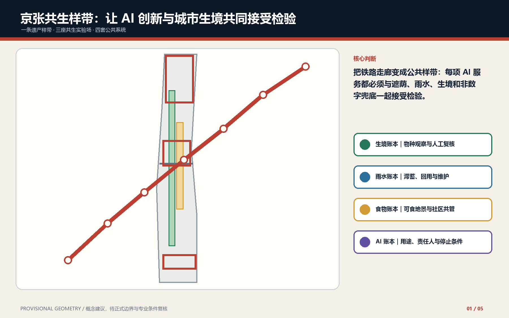
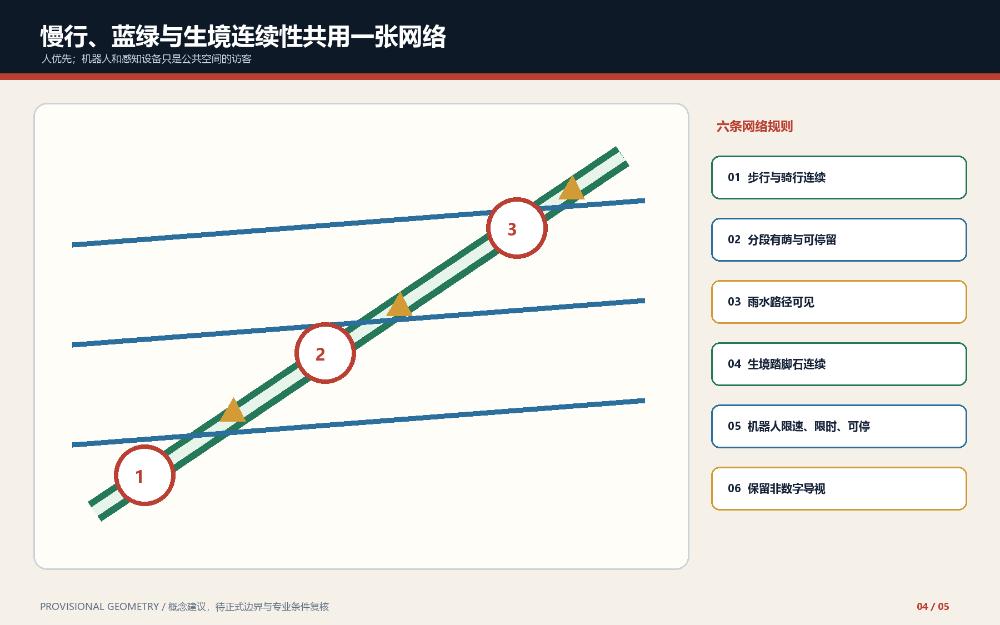

一带 · 三座生活实验场 · 四类公共账本

三座生活实验场
众智园
资源预算实验场
AI 原点社区
日常生活实验场
大钟寺
公共问责实验场
四类公共账本
生境
季节 + 复核者 + 恢复
雨水
汇水 + 溢流 + 维护
食物
种源 + 管理者 + 采收
AI
用途 + 接管 + 申诉 + 退出
核心复算指标
site_area_sqm11412825.386
green_ratio0.123423
public_space_ratio0.073281
self-checkPASS target
结构化权威层：geometry、metrics、矩阵、assumptions 与 self_check.json。

任务覆盖与审查索引
总览地图
三层范围、重点区域与用地分区。
交通慢行
蓝绿公共空间、建筑与更新项目。
AI 场景
核心指标、任务覆盖与自检状态。
来源与假设
来源和假设均见结构化证据文件。